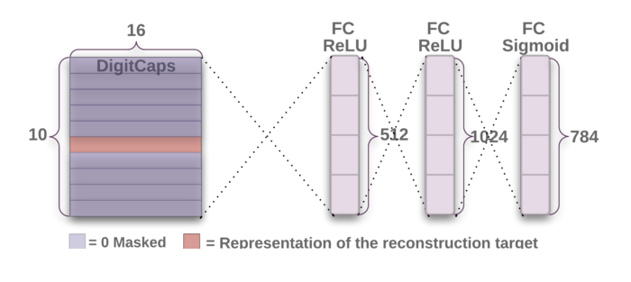

Capsule Neural Networks
I used Tensorflow to build a capsule network that classifies traffic signs.
Capsule Neural Networks (CapsNet) tackle the problem that CNNs have with Max Pooling layers (the idea of taking the most active neurons). This results in the CNN to strictly remembering the positions of certain features, but fails to classify the same image if we move the features to different locations.
View source code here.


Part 1: Encoder (first 3 layers of CapsNet)
Part 2: Decoder (the other 3 layers of CapsNet)
CapsNet Architecture
The first part of the network is responsible for taking an image as input
(i.e. MNIST digits) and converts them into a 16D vector.
• Convolutional Layer: Find basic features in the image
• The PrimaryCaps layer: has 32 capsules that is responsible for
taking those basic features and understanding the spatial relationships between them.
• The DigitCaps layer: contains 10 capsules, one for each layer.
This is where the network condenses the vector to 16D to be passed to the decoder.
The second part is the decoder. Its objective is to take the 16D vector from the encoder and reconstruct the image using that data. The closer the reconstructed 28x28 image looks to the original input, the better the model.
Read the full research paper
here.
Read the Dynamic Routing between Capsules research paper
here.
Current Performance
At the moment, capsule networks outperform certain state-of-the-art techniques on specific datasets. However, capsule networks have not been trained on larger datasets (i.e. CIFAR10), which makes it still trail behind other techniques.
On the bright side, the routing-by-agreement algorithm allows the model to understand more abstract images contrary to what it has learned. The tradeoff, however, lies in the time complexity being a lot more expensive.
Capsule Networks are very promising. With the current state of computing power, it makes it difficult to deploy at a larger scale. In the near future, I definitely see a huge potential for the applications that capsule networks can impact.
Decoder results after reconstructing using the info from the encoder